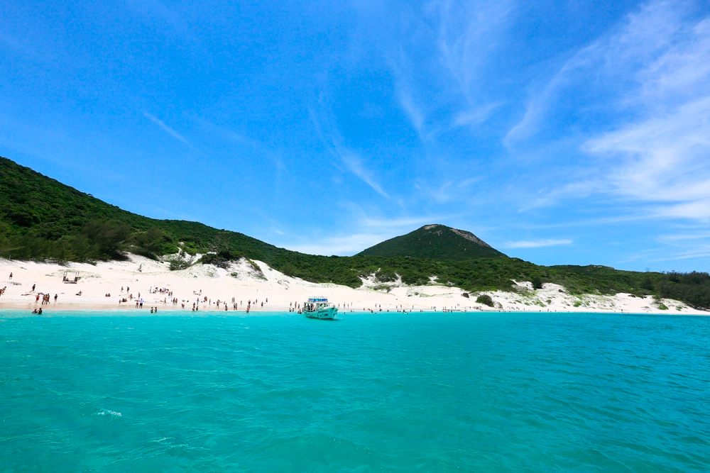

Best seller
Paragliding in Rio
Fly over Rio’s iconic mountains and beaches with certified pilots.
From R$ 600
Experience authentic adventures surrounded by nature and guided by professional tour guides.
Adventure, adrenaline and unforgettable views in Rio de Janeiro.
Fly over Rio’s iconic mountains and beaches with certified pilots.
From R$ 600A paragliding flight experience from one of Brazil’s most iconic locations.
From R$ 1500Experience Rio from the sky and enjoy unique panoramic views.
From R$ 1000Experience the vibrant nightlife of Rio with unique experiences, music, energy, and unforgettable scenarios.
Discover Little Africa and the birthplace of Rio’s samba culture.
Latin party full of rhythm and fun
Discover the true history, culture and daily life of Rio's favelas accompanied by local guides.
Learn about its history and vibrant urban culture through a safe and respectful perspective.
A cultural tour with panoramic views of Rio and the famous Michael Jackson stairway.
An authentic experience that combines local culture, nature, and unique sunsets.
Explore other excursions and activities that also form part of our proposal in Rio.